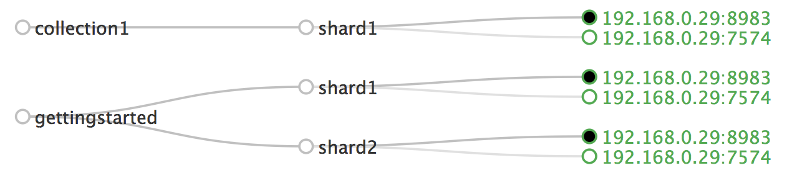
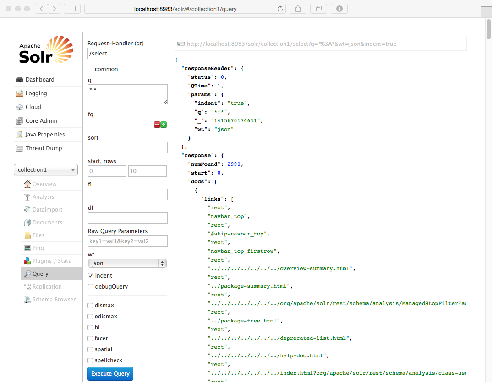
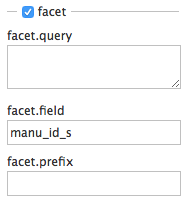
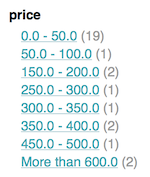
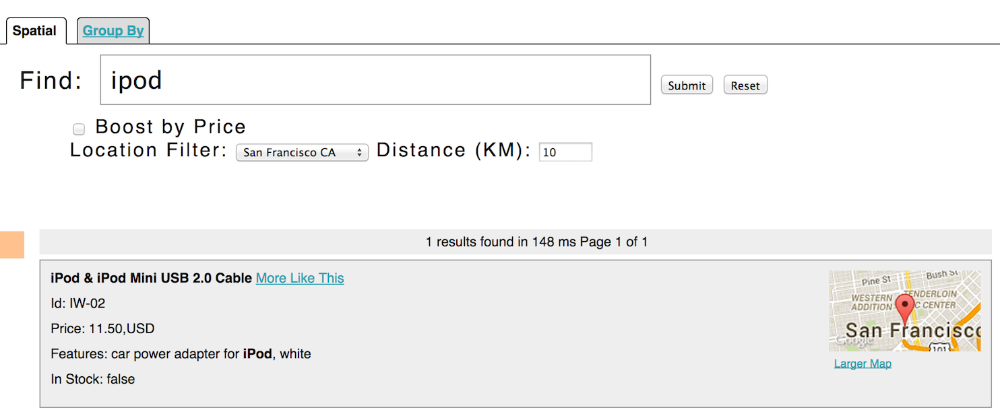

This document covers getting Solr up and running, ingesting a variety of data sources into multiple collections, and getting a feel for the Solr administrative and search interfaces.
To follow along with this tutorial, you will need...
java -version at the command line should indicate a version number starting with 1.7.Please run the browser showing this tutorial and the Solr server on the same machine so tutorial links will correctly point to your Solr server.
Begin by unzipping the Solr release and changing your working directory to the subdirectory where Solr was installed. Note that the base directory name may vary with the version of Solr downloaded. For example, with a shell in UNIX, Cygwin, or MacOS:
/:$ ls solr* solr-4.10.2.zip /:$ unzip -q solr-4.10.2.zip /:$ cd solr-4.10.2/
To launch Solr, run: bin/solr start -e cloud -noprompt
/solr-4.10.2:$ bin/solr start -e cloud -noprompt Welcome to the SolrCloud example! Starting up 2 Solr nodes for your example SolrCloud cluster. ... Started Solr server on port 8983 (pid=8404). Happy searching! ... Started Solr server on port 7574 (pid=8549). Happy searching! ... SolrCloud example running, please visit http://localhost:8983/solr /solr-4.10.2:$
You can see that the Solr is running by loading the Solr Admin UI in your web browser: http://localhost:8983/solr/. This is the main starting point for administering Solr.
Solr will now be running two "nodes", one on port 7574 and one on port 8983. There are two collections created automatically, collection1 and gettingstarted. These collections are different in a couple of ways: collection1 is a single shard collection with two replicas and gettingstarted is a two shard
collection, each with two replicas. The Cloud tab in the Admin UI diagrams the collection nicely:

We will only be using collection1 in this guide; it makes things easier in part because the indexing commands default to using that collection.
You nailed step 1. Take a deep breath, relax a bit before round 2 below.
Your Solr server is up and running, but it doesn't contain any data. The Solr install includes, literally, a SimplePostTool in order to facilitate getting various types of documents into Solr easy from the start. We'll be using this tool for the indexing examples below.
You'll need a command shell to run these examples, rooted in the Solr install directory; the shell from where you launched Solr works just fine.
Running the SimplePostTool can be made easier/cleaner to run by setting this in your environment:
export CLASSPATH=dist/solr-core-4.10.2.jar
Or if you prefer, you can make every java command start with java -classpath dist/solr-core-4.10.2.jar ... The examples provided below omit the -classpath argument and assume the $CLASSPATH environment variable is set.
Let's first index local "rich" files including HTML, PDF, Microsoft Office formats (such as MS Word), plain text and many other formats. SimplePostTool features the ability to crawl a directory of files, optionally recursively even, sending the raw content of each file into Solr for extraction and indexing. A Solr install includes a docs/ subdirectory, so that makes a convenient set of (mostly) HTML files built-in to start with.
java -Dauto -Drecursive org.apache.solr.util.SimplePostTool docs/
Here's what it'll look like:
/solr-4.10.2:$ java -Dauto -Drecursive org.apache.solr.util.SimplePostTool docs/ SimplePostTool version 1.5 Posting files to base url http://localhost:8983/solr/update.. Entering auto mode. File endings considered are xml,json,csv,pdf,doc,docx,ppt,pptx,xls,xlsx,odt,odp,ods,ott,otp,ots,rtf,htm,html,txt,log Entering recursive mode, max depth=999, delay=0s Indexing directory docs (3 files, depth=0) POSTing file index.html (text/html) POSTing file SYSTEM_REQUIREMENTS.html (text/html) POSTing file tutorial.html (text/html) Indexing directory docs/changes (1 files, depth=1) POSTing file Changes.html (text/html) Indexing directory docs/solr-analysis-extras (8 files, depth=1) ... 2945 files indexed. COMMITting Solr index changes to http://localhost:8983/solr/update.. Time spent: 0:00:37.537
The command-line breaks down as follows:
-Dauto -Drecursive: Settings for automatic content-type detection and directory recursingorg.apache.solr.util.SimplePostTool: Our easy to use POSTing friend in this tutorialdocs/: a relative path of the Solr install docs/ directoryYou have now indexed thousands of documents into the collection1 collection in Solr and committed these changes. You can search for "solr" by loading the Admin UI Query tab, and enter "solr" in the q param (replacing *:*, which matches all documents). See the Searching section below for more information.
To index your own data, re-run the directory indexing command pointed to your own directory of documents. For example, on a Mac instead of docs/ try ~/Documents/ or ~/Desktop/ ! You may want to start from a clean, empty system again, rather than have your content in addition to the Solr docs/ directory; see the Cleanup section below for how to get back to a clean starting point.
Solr supports indexing structured content in a variety of incoming formats. The historically predominant format for getting structured content into Solr has been Solr XML. Many Solr indexers have been coded to process domain content into Solr XML output, generally HTTP POSTed directly to Solr's /update endpoint.
Solr's install includes a handful of Solr XML formatted files with example data (mostly mocked tech product data).
Using SimplePostTool, index the example Solr XML files in example/exampledocs/:
java org.apache.solr.util.SimplePostTool example/exampledocs/*.xml
Here's what you'll see:
/solr-4.10.2:$ java org.apache.solr.util.SimplePostTool example/exampledocs/*.xml SimplePostTool version 1.5 Posting files to base url http://localhost:8983/solr/update using content-type application/xml.. POSTing file gb18030-example.xml POSTing file hd.xml POSTing file ipod_other.xml POSTing file ipod_video.xml POSTing file manufacturers.xml POSTing file mem.xml POSTing file money.xml POSTing file monitor.xml POSTing file monitor2.xml POSTing file mp500.xml POSTing file sd500.xml POSTing file solr.xml POSTing file utf8-example.xml POSTing file vidcard.xml 14 files indexed. COMMITting Solr index changes to http://localhost:8983/solr/update.. Time spent: 0:00:00.453
...and now you can search for all sorts of things using the default Solr Query Syntax (a superset of the Lucene query syntax)...
NOTE:
You can browse the documents indexed at http://localhost:8983/solr/collection1/browse. The /browse UI allows getting a feel for how Solr's technical capabilities can be worked with in a familiar, though a bit rough and prototypical, interactive HTML view. (The /browse view defaults to assuming the collection1 schema and data are a catch-all mix of structured XML, JSON, CSV example data, and unstructured rich documents. Your own data may not look ideal at first, though the /browse templates are customizable.)
Solr supports indexing JSON, either arbitrary structured JSON or "Solr JSON" (which is similiar to Solr XML).
Solr includes a small sample Solr JSON file to illustrate this capability. Again using SimplePostTool, index the sample JSON file:
java -Dauto org.apache.solr.util.SimplePostTool example/exampledocs/books.json
You'll see:
/solr-4.10.2:$ java -Dauto org.apache.solr.util.SimplePostTool example/exampledocs/books.json SimplePostTool version 1.5 Posting files to base url http://localhost:8983/solr/update.. Entering auto mode. File endings considered are xml,json,csv,... POSTing file books.json (application/json) 1 files indexed. COMMITting Solr index changes to http://localhost:8983/solr/update.. Time spent: 0:00:00.084
Because the SimplePostTool defaults to assuming files are in Solr XML format, the -Dauto switch is used to post JSON files so that it uses the appropriate content type.
To flatten (and/or split) and index arbitrary structured JSON, a topic beyond this quick start guide, check out Transforming and Indexing Custom JSON data.
A great conduit of data into Solr is via CSV, especially when the documents are homogonenous and generally all have the same set of fields. CSV can be conveniently exported from a spreadsheet such as Excel, or exported from databases such as MySQL. When getting started with Solr, it can often be easiest to get your structured data into CSV format and then index that into Solr rather than a more sophisticated single step operation.
Using SimplePostTool and the included example CSV data file, index it:
java -Dauto org.apache.solr.util.SimplePostTool example/exampledocs/books.csv
In your terminal you'll see:
/solr-4.10.2:$ java -Dauto org.apache.solr.util.SimplePostTool example/exampledocs/books.csv SimplePostTool version 1.5 Posting files to base url http://localhost:8983/solr/update.. Entering auto mode. File endings considered are xml,json,csv,... POSTing file books.csv (text/csv) 1 files indexed. COMMITting Solr index changes to http://localhost:8983/solr/update.. Time spent: 0:00:00.084
Import records from a database using the Data Import Handler (DIH).
Use SolrJ for Java or other Solr clients to programatically create documents to send to Solr.
Use the Admin UI Documents tab to paste in a document to be indexed, or select Document Builder from the Document Type dropdown to build a document one field at a time. Click on the Submit Document button below the form to index your document.
You may notice that even if you index content in this guide more than once, it does not duplicate the results found. This is because the example schema.xml specifies a "uniqueKey" field called "id". Whenever you POST commands to Solr to add a document with the same value for the uniqueKey as an existing document, it automatically replaces it for you. You can see that that has happened by looking at the values for numDocs and maxDoc in the "CORE"/searcher section of the statistics page...
http://localhost:8983/solr/#/collection1/plugins/core?entry=searcher
numDocs represents the number of searchable documents in the index (and will be larger than the number of XML, JSON, or CSV files since some files contained more than one document). The maxDoc value may be larger as the maxDoc count includes logically deleted documents that have not yet been removed from the index. You can re-post the sample files over and over again as much as you want and numDocs will never increase, because the new documents will constantly be replacing the old.
Go ahead and edit any of the existing example data files, change some of the data, and re-run the SimplePostTool command. You'll see your changes reflected in subsequent searches.
You can delete data by POSTing a delete command to the update URL and specifying the value of the document's unique key field, or a query that matches multiple documents (be careful with that one!). Since these commands are smaller, we specify them right on the command line rather than reference a JSON or XML file.
Execute the following command to delete a specific document
java -Ddata=args org.apache.solr.util.SimplePostTool "<delete><id>SP2514N</id></delete>"
Round 2, check. Now get up and do some jumping jacks. Heck, go for a run and leave your house, you deserve it.
Solr can be queried via REST clients cURL, wget, Chrome POSTMAN, etc., as well as via the native clients available for many programming languages.
The Solr Admin UI includes a query builder interface - see the collection1 query tab at http://localhost:8983/solr/#/collection1/query. If you click the Execute Query button without changing anything in the form, you'll get 10 random documents in JSON format (*:* in the q param matches all documents):

The URL sent by the Admin UI to Solr is shown in light grey near the top right of the above screenshot - if you click on it, your browser will show you the raw response. To use cURL, just give the same URL in quotes on the curl command line:
curl "http://localhost:8983/solr/collection1/select?q=*%3A*&wt=json&indent=true"
In the above URL, the ":" in "q=*:*" has been URL-encoded as "%3A", but since ":" has no reserved purpose in the query component of the URL (after the "?"), you don't need to URL encode it. So the following also works:
curl "http://localhost:8983/solr/collection1/select?q=*:*&wt=json&indent=true"
To search for a term, give it as the q param value - in the Admin UI Query tab, replace *:* with the term you want to find. To search for "foundation":
curl "http://localhost:8983/solr/collection1/select?wt=json&indent=true&q=foundation"
You'll see:
/solr-4.10.2$ curl "http://localhost:8983/solr/collection1/select?wt=json&indent=true&q=foundation" { "responseHeader":{ "status":0, "QTime":0, "params":{ "indent":"true", "q":"foundation", "wt":"json"}}, "response":{"numFound":2812,"start":0,"docs":[ { "id":"0553293354", "cat":["book"], "name":"Foundation", ...
The response indicates that there are 2,812 hits ("numFound":2812), of which the first 10 were returned, since by default start=0 and rows=10. You can specify these params to page through results, where start is the position of the first result to return, and rows is the page size.
To restrict fields returned in the response, use the fl param, which takes a comma-separated list of field names. E.g. to only return the id field:
curl "http://localhost:8983/solr/collection1/select?wt=json&indent=true&q=foundation&fl=id"
q=foundation matches nearly all of the docs we've indexed, since most of the files under docs/ contain "The Apache Software Foundation". To restrict search to a particular field, use the syntax "q=field:value", e.g. to search for foundation only in the name field:
curl "http://localhost:8983/solr/collection1/select?wt=json&indent=true&q=name:foundation"
The above request returns only one document ("numFound":1) - from the response:
... "response":{"numFound":1,"start":0,"docs":[ { "id":"0553293354", "cat":["book"], "name":"Foundation", ...
To search for a multi-term phrase, enclose it in double quotes: q="multiple terms here". E.g. to search for "CAS latency" - note that the space between terms must be converted to "+" in a URL (the Admin UI will handle URL encoding for you automatically):
curl "http://localhost:8983/solr/collection1/select?wt=json&indent=true&q=\"CAS+latency\""
You'll get back:
{ "responseHeader":{ "status":0, "QTime":0, "params":{ "indent":"true", "q":"\"CAS latency\"", "wt":"json"}}, "response":{"numFound":2,"start":0,"docs":[ { "id":"VDBDB1A16", "name":"A-DATA V-Series 1GB 184-Pin DDR SDRAM Unbuffered DDR 400 (PC 3200) System Memory - OEM", "manu":"A-DATA Technology Inc.", "manu_id_s":"corsair", "cat":["electronics", "memory"], "features":["CAS latency 3,\t 2.7v"], ...
By default, when you search for multiple terms and/or phrases in a single query, Solr will only require that one of them is present in order for a document to match. Documents containing more terms will be sorted higher in the results list.
You can require that a term or phrase is present by prefixing it with a "+"; conversely, to disallow the presence of a term or phrase, prefix it with a "-".
To find documents that contain both terms "one" and "three", enter +one +three in the q param in the Admin UI Query tab. Because the "+" character has a reserved purpose in URLs (encoding the space character), you must URL encode it for curl as "%2B":
curl "http://localhost:8983/solr/collection1/select?wt=json&indent=true&q=%2Bone+%2Bthree"
To search for documents that contain the term "two" but don't contain the term "one", enter +two -one in the q param in the Admin UI. Again, URL encode "+" as "%2B":
curl "http://localhost:8983/solr/collection1/select?wt=json&indent=true&q=%2Btwo+-one"
For more Solr search options, see the Solr Reference Guide's Searching section.
One of Solr's most popular features is faceting. Faceting allows the search results to be arranged into subsets (or buckets or categories), providing a count for each subset. There are several types of faceting: field values, numeric and date ranges, pivots (decison tree), and arbitrary query faceting.
In addition to providing search results, a Solr query can return the number of documents that contain each unique value in the whole result set.
From the Admin UI Query tab, if you check the "facet" checkbox, you'll see a few facet-related options appear:

To see facet counts from all documents (q=*:*): turn on faceting (facet=true), and specify the field to facet on via the facet.field param. If you only want facets, and no document contents, specify rows=0. The curl command below will return facet counts for the manu_id_s field:
curl http://localhost:8983/solr/collection1/select?wt=json&indent=true&q=*:*&rows=0 \ &facet=true&facet.field=manu_id_s
In your terminal, you'll see:
{ "responseHeader":{ "status":0, "QTime":3, "params":{ "facet":"true", "indent":"true", "q":"*:*", "facet.field":"manu_id_s", "wt":"json", "rows":"0"}}, "response":{"numFound":2990,"start":0,"docs":[] }, "facet_counts":{ "facet_queries":{}, "facet_fields":{ "manu_id_s":[ "corsair",3, "belkin",2, "canon",2, "apple",1, "asus",1, "ati",1, "boa",1, "dell",1, "eu",1, "maxtor",1, "nor",1, "uk",1, "viewsonic",1, "samsung",0]}, "facet_dates":{}, "facet_ranges":{}, "facet_intervals":{}}}
For numerics or dates, it's often desirable to partition the facet counts into ranges rather than discrete values. A prime example of numeric range faceting, using the example product data, is price. In the /browse UI, it looks like this:

The data for these price range facets can be seen in JSON format with this command:
curl http://localhost:8983/solr/collection1/select?q=*:*&wt=json&indent=on&rows=0&facet=true \ &facet.range=price \ &f.price.facet.range.start=0 \ &f.price.facet.range.end=600 \ &f.price.facet.range.gap=50 \ &facet.range.other=after
In your terminal you will see:
{ "responseHeader":{ "status":0, "QTime":1, "params":{ "facet.range.other":"after", "facet":"true", "indent":"on", "q":"*:*", "f.price.facet.range.gap":"50", "facet.range":"price", "f.price.facet.range.end":"600", "wt":"json", "f.price.facet.range.start":"0", "rows":"0"}}, "response":{"numFound":2990,"start":0,"docs":[] }, "facet_counts":{ "facet_queries":{}, "facet_fields":{}, "facet_dates":{}, "facet_ranges":{ "price":{ "counts":[ "0.0",19, "50.0",1, "100.0",0, "150.0",2, "200.0",0, "250.0",1, "300.0",1, "350.0",2, "400.0",0, "450.0",1, "500.0",0, "550.0",0], "gap":50.0, "start":0.0, "end":600.0, "after":2}}, "facet_intervals":{}}}
Another faceting type is pivot facets, also known as "decison trees", allowing two or more fields to be nested for all the various possible combinations. Using the example technical product data, pivot facets can be used to see how many of the products in the "book" category (the cat field) are in stock or not in stock. Here's how to get at the raw data for this scenario:
curl http://localhost:8983/solr/collection1/select?q=*:*&rows=0&wt=json&indent=on \ &facet=on&facet.pivot=cat,inStock
This results in the following response (trimmed to just the book category output), which says out of 14 items in the "book" category, 12 are in stock and 2 are not in stock:
... "facet_pivot":{ "cat,inStock":[{ "field":"cat", "value":"book", "count":14, "pivot":[{ "field":"inStock", "value":true, "count":12}, { "field":"inStock", "value":false, "count":2}]}, ...
For the full scoop on Solr faceting, visit the Solr Reference Guide's Faceting section.
Solr has sophisticated geospatial support, including searching within a specified distance range of a given location (or within a bounding box), sorting by distance, or even boosting results by the distance. Some of the example tech product documents in example/exampledocs/*.xml have locations associated with them to illustrate the spatial capabilities. Spatial queries can be combined with any other types of queries, such as in this example of querying for "ipod" within 10 kilometers from San Francisco:

The URL to this example is http://localhost:8983/solr/collection1/browse?q=ipod&pt=37.7752%2C-122.4232&d=10&sfield=store&fq=%7B%21bbox%7D&queryOpts=spatial&queryOpts=spatial, leveraging the /browse UI to show a map for each item and allow easy selection of the location to search near.
To learn more about Solr's spatial capabilities, see the Solr Reference Guide's Spatial Search section.
If you've run the full set of commands in this quick start guide you have done the following:
Nice work! The script (see below) to run all of these items took under two minutes! (Your run time may vary, depending on your computer's power and resources available.)
Here's a Unix script for convenient copying and pasting in order to run the key commands for this quick start guide:
export CLASSPATH=dist/solr-core-4.10.2.jar date ; bin/solr start -e cloud -noprompt ; open http://localhost:8983/solr ; java -Dauto -Drecursive org.apache.solr.util.SimplePostTool docs/ ; open http://localhost:8983/solr/collection1/browse ; java org.apache.solr.util.SimplePostTool example/exampledocs/*.xml ; java -Dauto org.apache.solr.util.SimplePostTool example/exampledocs/books.json ; java -Dauto org.apache.solr.util.SimplePostTool example/exampledocs/books.csv ; open "http://localhost:8983/solr/#/collection1/plugins/core?entry=searcher" ; java -Ddata=args org.apache.solr.util.SimplePostTool "<delete><id>SP2514N</id></delete>" ; bin/solr healthcheck -c collection1 ; date ;
As you work through this guide, you may want to stop Solr and reset the environment back to the starting point. The following command line will stop Solr and remove the directories for each of the two nodes that the start script created:
bin/solr stop -all ; rm -Rf node1/ node2/
For more information on Solr, check out the following resources: